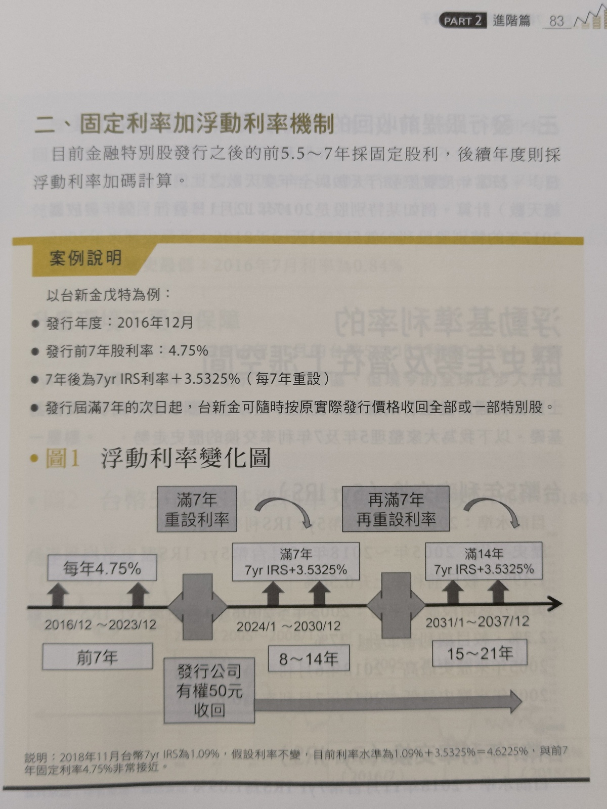
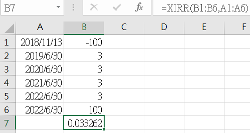

[筆記] 7檔特別股養我一輩子
很多上市公司發行特別股，但定義與形式都還是有些差異，還是要看各家規定。
發放股利順位: 特別股優先，普通股之後
若公司有盈餘，扣除法定保留項目後，優先發給特別股股東股利 [心得] 如果是專門領股利的散戶，是不是有特別股就不要選普通股呢?
公司清算順序
- 政府: 欠稅、罰鍰、規費。
- 員工: 薪資、各項福利。
- 債權人: 先還有擔保品的
- 特別股
- 普通股 [心得] 雖然投資一家公司不是為了等他清算，但還是可以看一下，當股東的地位其實很低。
特別股的特殊條件
- 累積: 累積，表示若當年度沒有足夠盈餘，會累計到次年補發。大部分特別股都是不累積。
- 參加: 不參加，表示不參加剩餘經營結果(指普通股股利)，所以特別股利率等於約定利率。大部分都是不參加。
- 提前收回: 約定在未來年度後，以發行價或約定價格，回收股票(交易手續費由該公司支付)。大部分都是7年後，可以執行回收股票，但也可以繼續發行。
- 轉換: 轉換成為普通股。大部分都是不可轉換。
[心得] 常態的條件是: 不累積、不參加，發行7年後可以提前收回、不轉換，這樣其實可以當作是7年以上的不定期債券，公司會按照合約配發股利，但有機會因為當年度營運不佳，那一年就沒有利息。
對於公司來說，與其發債券，不如發特別股還比較有優勢。換句話說，對於投資人而言，有辦法買債券就買債券吧。
書本標題提到「養我一輩子」也是很不符合實際的狀況，大部分都是有機會被收回的。
壽險公司買很多金融特別股
[心得]用儲蓄險的2.x%去賺3.x~4.x%的特別股股利，算是穩定1%以上利差獲利，但儲蓄險不會強制收回，特別股會，這樣保險公司之後會怎麼處理呢?
金融特別股發行5.5年~7年採用固定利率，之後採用浮動利率，通常每7年調整一次約定利率。
如附圖。

[心得] 也就是說，如果升息，特別股股利也會增加，反之，降息的話特別股股利就會減少。
年年配息的報酬率計算
運用Excel 的XIRR公式計算年報酬率 如附圖。

後記
-
所有投資商品，都有其預期報酬與相應風險，特別股明顯風險小於普通股。
-
如果需要現金流的存股族，感覺很適合特別股，但普通股會有機會配發5%以上，目前看到的數字，特別股前7年都少於5%，所以沒有壓倒性優勢。
-
因為特別股會用發行價收回，所以只要放到最後一刻，就不存在"配息只是左手換右手"的說法。
-
特別股流動性很差，如果要大量買賣一定會滑價，最佳的買入時間應該就是申購與跌破發行價的時候，但還是要小心公司盈餘不夠發股利的情況。
-
既然都知道儲蓄險的背後有一部份是特別股，那是不是就不要給保險公司賺利差? 可是這樣就不可能在需要錢的時候一大筆解約(流動性差)。
-
就我現在的狀態，我還不需要特別股，等我進入需要股票給我現金流的年紀後，再來關注特別股也不遲(特別股可能被提前收回)。
連結
不知道為什麼連結都失效了(消失?)